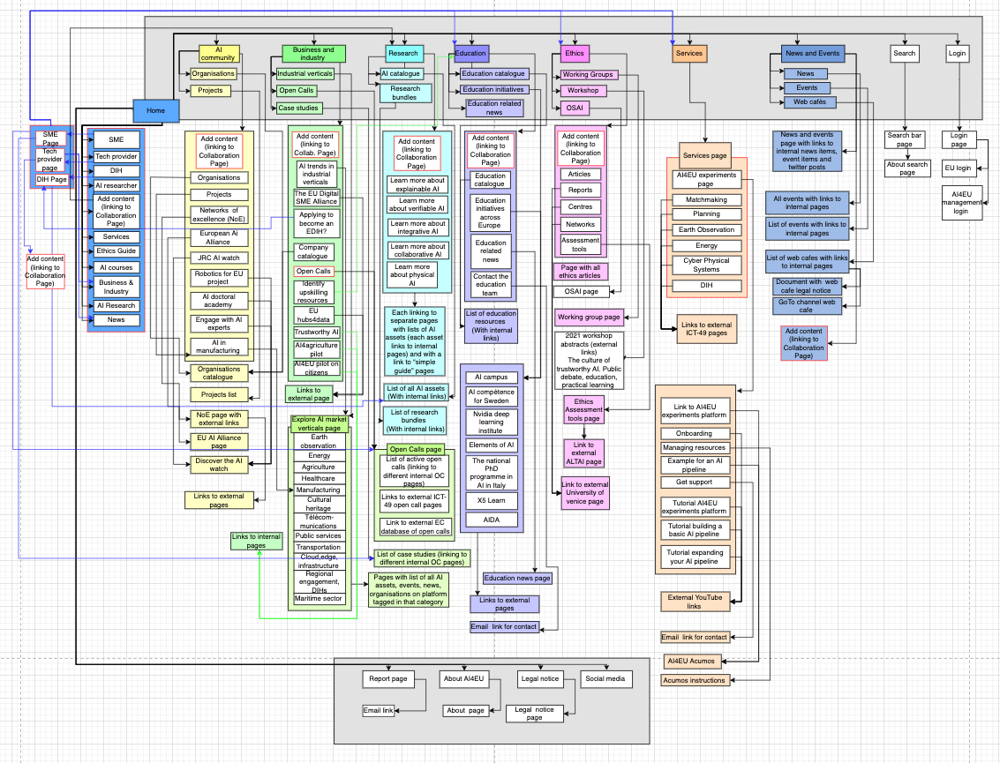

Platform Elements
Figure 1 depicts the structure of the AI-on-demand platform which consists of eight main elements, Home, AI Community, Business and Industry, Research, Education, Ethics, Services, and News and Events which are represented by different colours in this figure. The grey boxes represent elements that are available on all pages of the platform such as the menu which can be found at the top of every page and is illustrated by the top grey box. The seven elements in the menu have different drop-down menus which are also shown in the grey box. The bottom grey box shows the four elements Report page, About AI4EU, Legal notice and Social media that can be found at the bottom of every page. All pages except for the Services page provide a link to the Collaboration page where content can be added to the platform.
Home
The first element of the platform is the homepage, which can be accessed from anywhere on the platform by clicking on the AI4EU logo. The homepage provides four different links for the four main user groups. For the user-groups SMEs, Technology Providers and DIHs it links to three different user-specialized pages. For the user-group researchers it links to the platform’s research page. The homepage also links to a collaboration page where anyone can add content using the EU login. The homepage also links to the other seven main sections.
AI Community
The AI Community element links to a list of AI-related organizations and projects as well as to a selection of European AI initiatives such as the Networks of Excellence, the European AI Alliance, the JRC AI Watch.
Business and Industry
The Business and Industry element links to initiatives supporting business and industry, such as the EU Digital SME Alliance and EU Hubs4Data. This element also provides access to Industrial Verticals, Open Calls, and Case Studies. The Industrial Verticals page which is accessible through Business and Industry is categorized into twelve different elements, Earth Observation, Agriculture, Energy, Healthcare, Manufacturing, Cultural Heritage, Telecommunications, Public Services, Transportation, Regional Engagement - DIHs, the Maritime Sector, and Cloud, Edge and Infrastructure.
Research
The Research element provides a space for researchers and other interested users to learn more about verifiable AI, integrative AI, collaborative AI and physical AI, and to access research bundles and AI assets.
Education
The Education element provides access to a catalogue of AI courses and European AI education initiatives such as AI Campus, AI Competence Sweden, NVIDIA Deep Learning Institute, Elements of AI, the National PhD programme in Artificial Intelligence in Italy, X5 Learn, and the Artificial Intelligence Doctoral Academy AIDA.
Ethics
The Ethics element links to AI-ethics-related articles, reports, networks and an assessment tool which offers researchers, developers and companies’ frameworks to review the ethics of their AI projects throughout their research, development or production cycle. The Ethics element also provides access to a page dedicated to the Observatory on Society and Artificial Intelligence (OSAI) which aims to offer a selected set of tools that help people to better understand and study the impact of AI technologies across the European Union
Services
The Services element provides access to the different services of the platform. One of these services is the Experimentation service which is an open space for AI developers that offers visual and intuitive design methods. This service facilitates the creation of human-centered AI-solutions, building modular structures and using hybrid AI technologies. It also provides an opportunity to discover the resources of the AI-on-demand platform, develop your own solutions and to collaborate and share your ideas and solutions with the AI community. Six additional services are also being developed by the ICT-49 projects and will be added to the platform. These services are the following:
A DIH Support service for SMEs and tech governmental agencies
A Planning and Scheduling service for companies, SMEs and innovators
A scalable AI-as-a Service service for the Deep Edge helping SMEs digitalise in the sector
A Matchmaking service for connecting businesses, AI experts & hardware providers / exploring AI in different languages
An Earth Observation service for users of Copernicus Data
An AI in Enenergy service for SMEs reshaping their energy value chain
News and Events
The news and Events element provides an overview of upcoming and past AI-related events such as Open Calls or AI-related webinars as well as the latest AI-related news.